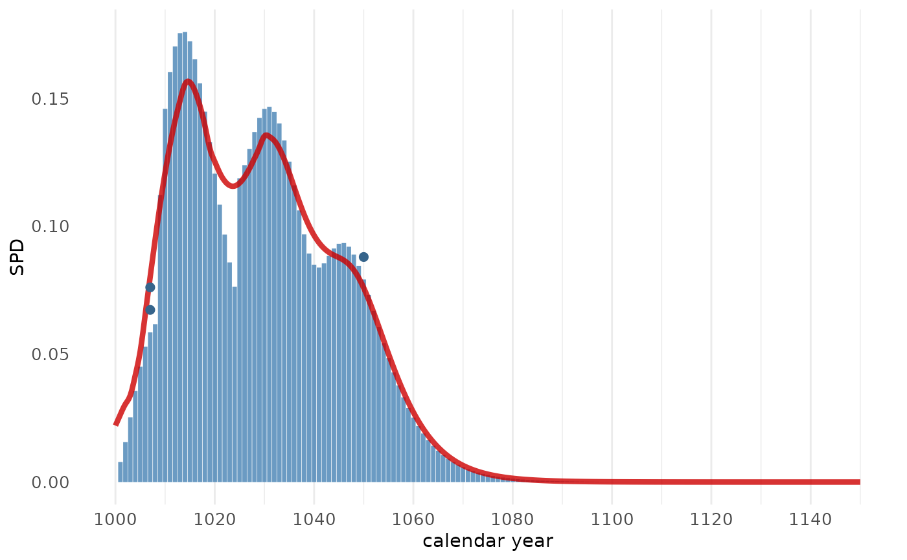

Computes the summed probability density (SPD) for a set of felling date ranges.
Usage
sw_sum(
x,
series = "series",
last = "last",
n_sapwood = "n_sapwood",
waneyedge = "waneyedge",
sw_data = "Hollstein_1980",
densfun = "lognormal",
cred_mass = 0.954,
plot = FALSE,
scale_p = FALSE
)Arguments
- x
A
data.framewith columns c("series", "swr", "waneyedge" , "last"), Column "sw_model" is optional. Could be the output of read_fh(x, header = TRUE)- series
Name of the column in
xwhere ID's of the tree-ring series are listed ascharactervalues.- last
Name of the column in
xwhere calendar years assigned to the last measured ring are listed (should benumeric).- n_sapwood
Name of the column in
xwhere the number of observed sapwood rings are listed (should benumeric)- waneyedge
Name of the column in
xindicating the presence (TRUE)/absence (FALSE) of waney edge (should be alogical).- sw_data
The name of the sapwood data set to use for modelling. It should be one of the data sets listed in
sw_data_overview(), or the name of adata.framewith sapwood data in columnsn_sapwoodandcount.- densfun
Name of the density function fitted to the sapwood data set. Should be one of:
lognormal (the default value),
normal,
weibull,
gammma.
- cred_mass
A
scalar [0, 1]specifying the mass within the credible interval (default = .954).- plot
A
logical.If
TRUE,sw_sum_plot()is triggered and a ggplot-style graph is returned with the summed probability density (SPD).If
FALSE, alistwith the numeric output of the modelling process is returned.
- scale_p
A
logical. IfTRUEthe summed probability density is scaled to 1 (default).
Examples
trs_example7
#> series last n_sapwood waneyedge
#> 1 trs_34 1000 5 FALSE
#> 2 trs_35 1009 10 FALSE
#> 3 trs_36 1007 15 TRUE
#> 4 trs_37 1007 16 TRUE
#> 5 trs_38 1010 8 FALSE
#> 6 trs_39 1020 0 FALSE
#> 7 trs_40 1025 10 FALSE
#> 8 trs_41 1050 NA TRUE
#> 9 trs_42 1035 1 FALSE
sw_sum(trs_example7, plot = TRUE)
#> Warning: --> 1 series without sapwood rings or waney edge detected
#> and removed from the data set
